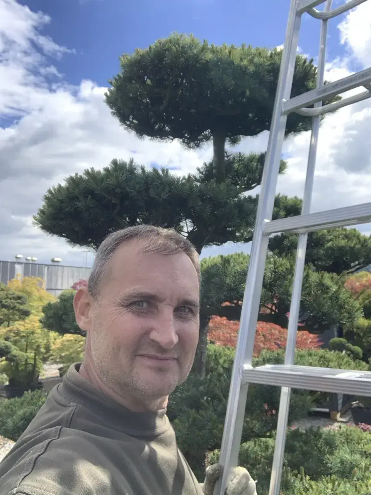

Vorher / Nachher - meine Arbeit.
Reale Fotos von Gartenbonsai, Niwaki, Kiefern und geformten Solitaerbaeumen. Einige Reihen zeigen Phasen der Arbeit; klare Vorher/Nachher-Paare werden nur verwendet, wenn sie im Katalog markiert sind.





Der Meister bei der Arbeit.
Reale Arbeits- und Portraetfotos von Viktor.


Kostenlose erste Einschätzung
Bereit, Ihren Baum zu retten?
Senden Sie mir ein Foto der Problemstelle - ich sage Ihnen kostenlos, ob und wie Ihr Baum zu retten ist. Ehrlich, ohne Verpflichtung.